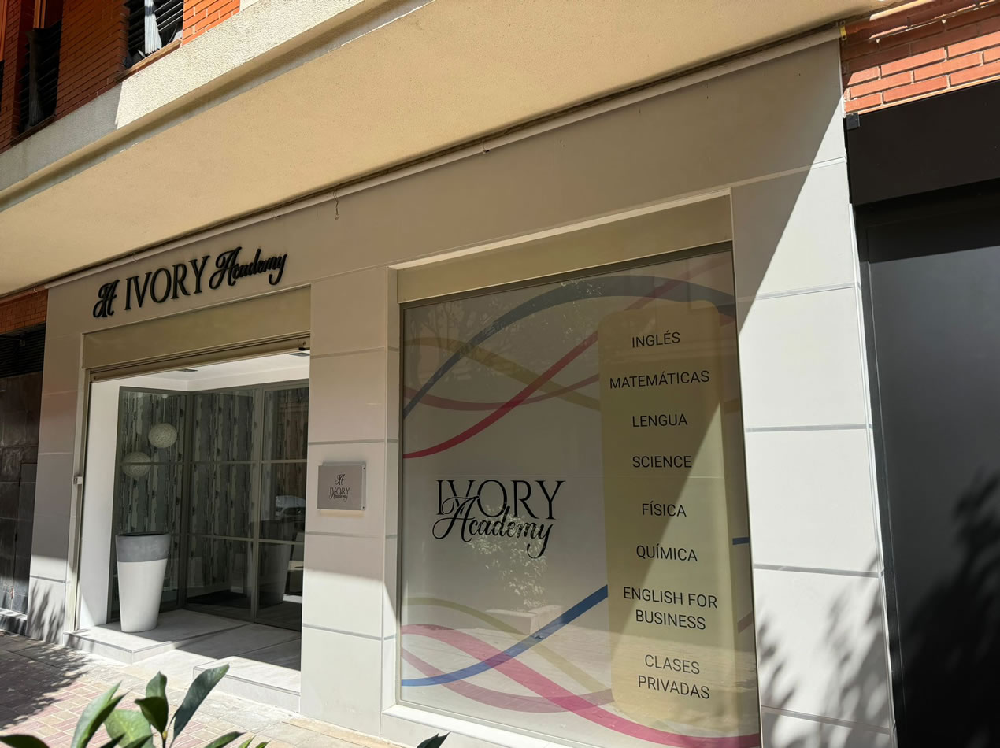

| Horario |
|---|
| Lunes a Viernes de 10:00 a 14:00 y de 16:00 a 20:00 |
“Lo que más me impresionó de Tania es cómo conseguía crear un ambiente de aprendizaje tan dinámico y participativo. Cada alumno se sentía motivado para dar lo mejor de sí, y eso era en gran parte gracias a ella. Es una profesora que realmente se preocupa por el éxito de sus alumnos, y estoy segura de que va a seguir dejando una huella positiva en muchos más.”
“No me gusta nada el inglés y siempre fue un asunto pendiente, pero gracias a Tania he conseguido obtener el certificado Cambridge y poder mantener una conversación. Siempre te recomendaré!!"
“Es una de esas profesoras a las que de verdad le importa tu aprendizaje (el de mis hijos, en este caso). Es buena profesional y mucho más. Al final, eso se nota en los resultados."
“Le doy 5/5, Tania es una profesora increíble que explica genial y de una manera muy lúdica. Lo recomiendo a muchos estudiantes"
“Tania es una profesora única e increíble, su afán por la enseñanza hace llevar a sus alumnos a otro nivel."
“Como compañera de Tania tuve la oportunidad de conocer a una gran maestra, una docente con una implicación del 100% en el desarrollo de su labor. Preocupada por conocer a cada uno de sus alumnos y de llevar un seguimiento personalizado para poder ayudarles y asegurar el logro de su máximo potencial, tanto académico como personal. Sin duda, ¡una profesora sobresaliente!"
© Ivory Academy Getafe